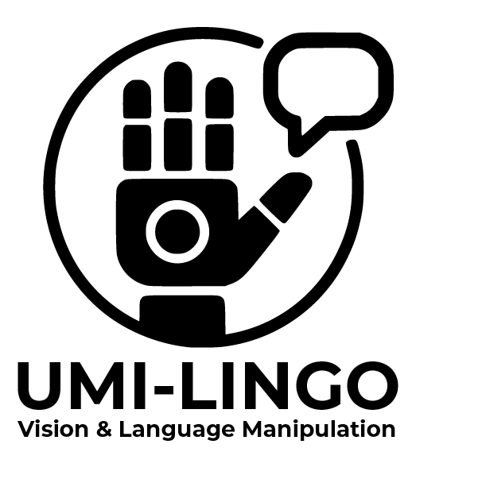
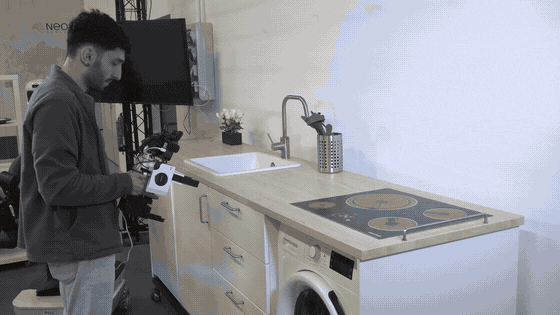
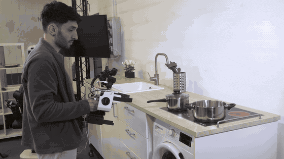
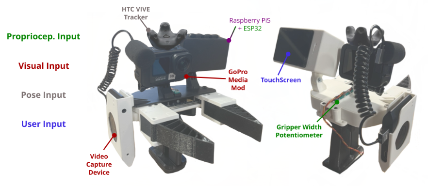
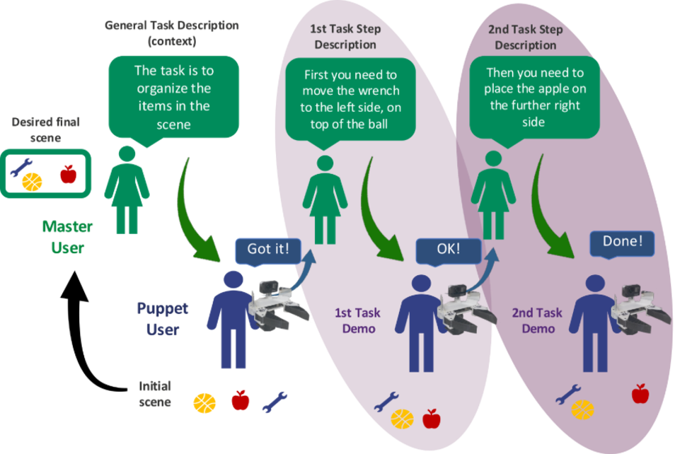

UMI-LINGO democratises robot learning by providing an open-source handheld gripper and a multimodal dataset from human demonstrations. By integrating natural language instructions, visual inputs, and low-level sensor inputs, the project enables multimodal cost-effective data collection, accelerating automation adoption across sectors, particularly for SMEs.
In this sense, UMI-LINGO enables automatic skills implementation, eliminating manual programming and enhancing workflow autonomy. Beyond euROBIN, this initiative benefits the entire EU industry by promoting dataset reusability, lowering R&D barriers, and enhancing collaboration. To maximise accessibility, the project provides video tutorials on gripper assembly, data capture and model training, empowering SMEs and non-expert users to deploy robotic solutions independently and affordably.
UMI-LINGO is an initiative selected by the 3rd Open Call “Creation of manipulation tasks dataset with vision and language instructions on tech exchange and collaborative projects on robotics and AI”, boosted by the euROBIN project .
This project has been executed by Eurecat’s Robotics and Automation Unit , with mentoring from the HUCEBOT research group (INRIA) , and it will be showcased in a household environment.
The technical contribution of UMI-LINGO is two-fold: (i) an improved UMI gripper for multimodal data acquisition compatible with the ROS 2 ecosystem, and (ii) a methodology to efficiently obtain short-horizon human demonstrations.
The GenUMI (Generalizable UMI) device has been conceptualised as an evolution of the original Universal Manipulation Interface (UMI), introducing significant architectural changes to enable real-time data synchronisation and sensor flexibility.

The two-person puppeteering protocol aims at the acquisition of demonstrations of atomic task-steps linked to language descriptions using a gamified setup where a Master User dictates the action to be performed by a Puppet User using the GenUMI device.
It has been implemented into the pipeline through interfaces for each user that set the process evolution, relying on a desired final state of the scene containing available objects in specific locations.
To foster diversity and avoid biases, this final state has been generated using a Visual Language Model (VLM).
This setup has been validated through the generation of the available dataset on tasks for daily-life environments , containing demonstrations acquired at both HUCEBOT (INRIA) and Eurecat facilities.



This work was funded by the European Union. Views and opinions expressed are however those of the author(s) only and do not necessarily reflect those of the European Union or European Commission. Neither the European Union nor the granting authority can be held responsible for them.